動物之森
今天早早的就出發了，背著一個背包，裡頭有兩瓶水、七八條巧克力餅乾、地圖跟車票，手上拿一台相機，要去逛波茲南的動物園。
動物園裡面只有一間餐廳，外面有商店，但是價錢不用想也知道一定很貴，所以能帶的就自己帶，地圖是從諮詢中心拿免費的。
車票是之前就買好的，手繪地圖則是小鵝畫的重要資料，包含怎麼從宿舍走去公車站、搭幾號電車、以及怎麼從公車站走去搭火車。
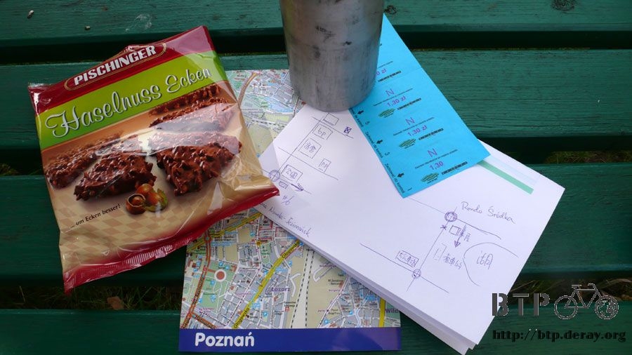
從宿舍一路走過去，不時看到卿卿我我的情侶當接吻得難分難捨，雖然我只有一個人，還是要開心的給他玩下去。
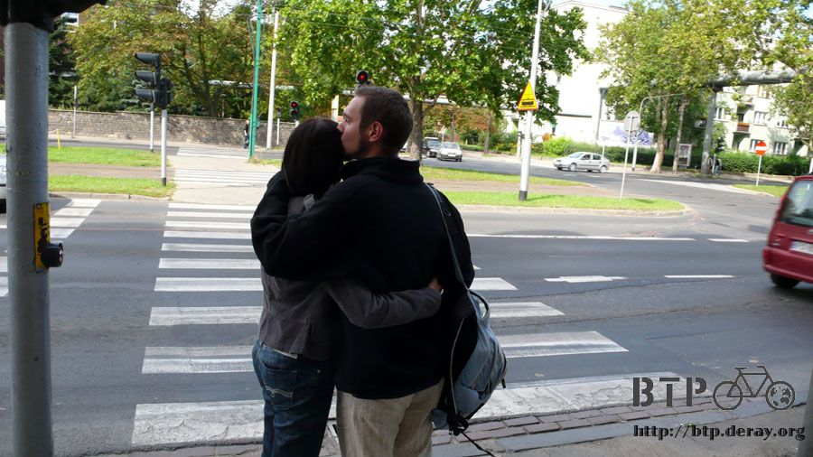
馬路對面的公車站就是要等車的地方，只需要搭六號電車就可以直達，距離十二站，車程二十四分鐘，所以打兩張十分鐘的票就可以搭上三十分鐘。
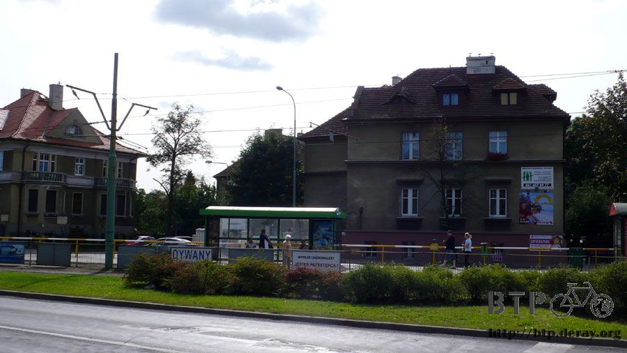
沒幾分鐘車子就來了，這邊的電車軌道是不能給汽車走的，所以搭電車不會塞車，外觀看起來窄窄的電車搭起來不知道是什麼感覺。
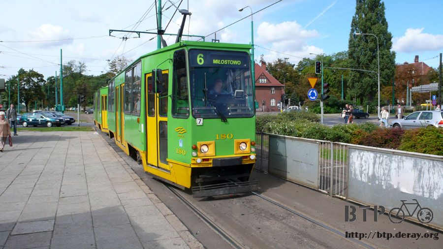
電車用三節車廂串連在一起，車子停的位置不一定，停穩之後得自己按下車門旁邊的按鈕才會開門，如此可以避免不必要的開關門動作。
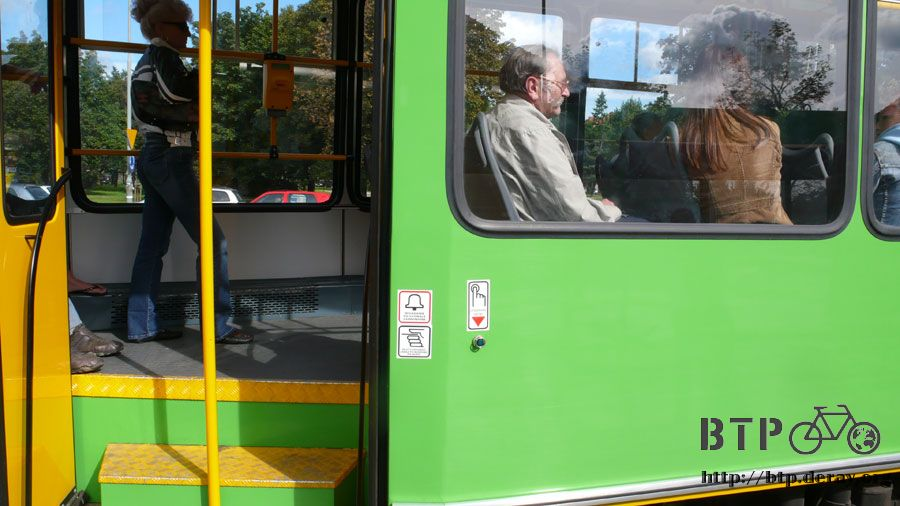
上車打卡，一個小小的機器就是了，它的功能非常單純，就是在票劵上列印時間，從那一刻開始計算這張票的有效期限。
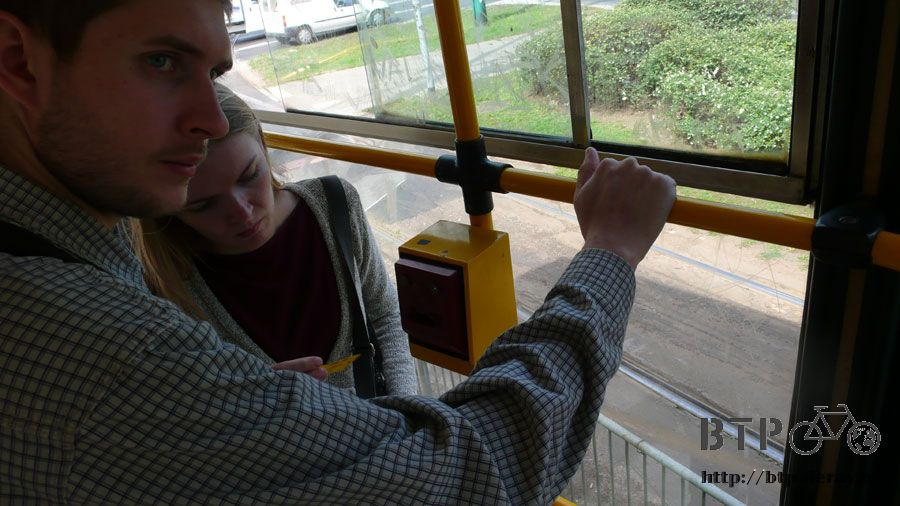
波茲南真是男的帥、女的美～
從外面看起來窄窄的電車，裡面很寬敞，大大的窗戶採光超好，搭電車欣賞風景很愜意，靠站的時候沒有廣播報站名，要注意別坐過頭。
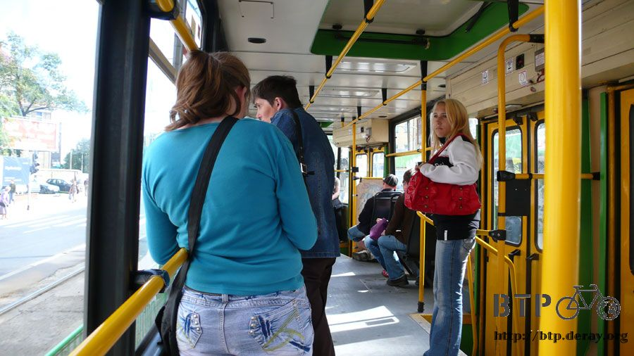
坐在椅子上複習一下小鵝的攻略，他特地列印了六號公車的時刻表跟站名，這次要搭到藍色箭頭的那一站。
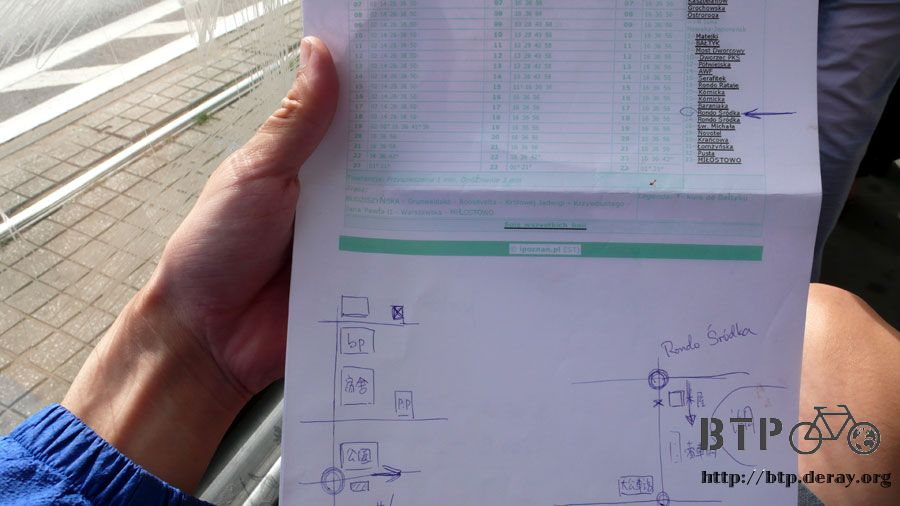
等一下會經過一個大公車站右轉，橫跨湖區之後就準備下車，然後步行去轉搭小火車。
就是它了，超大的公車站，全市的公車搞不好都會經過這邊，除了這麼大的站之外，也有單邊才停靠的小站。

前座的乘客穿的T-shirt，看這個畫風，應該是某一套日本漫畫吧。
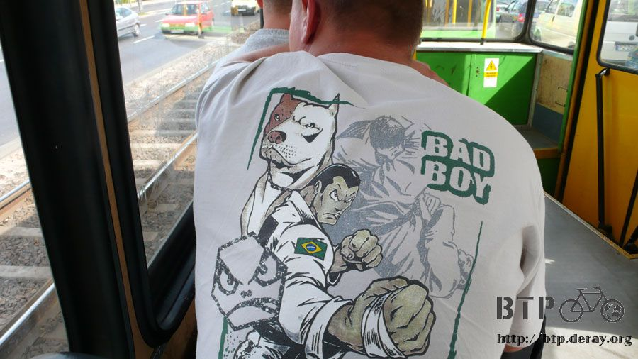
電車每一站都會停，心中默數十二站就準備下車。
到了！下車下車～車子停好之後一樣要按車門旁邊的按鈕，門才會打開。
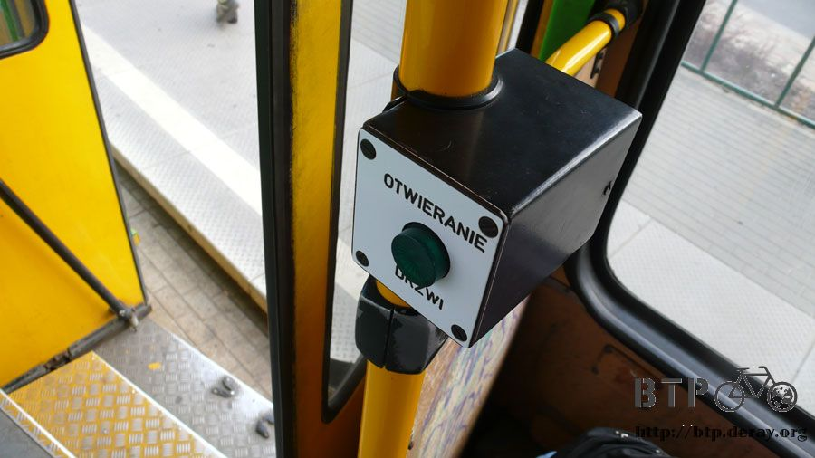
很清楚的指示牌，看不懂也沒關係，旁邊畫著火車的圖案，跟著走準沒錯。
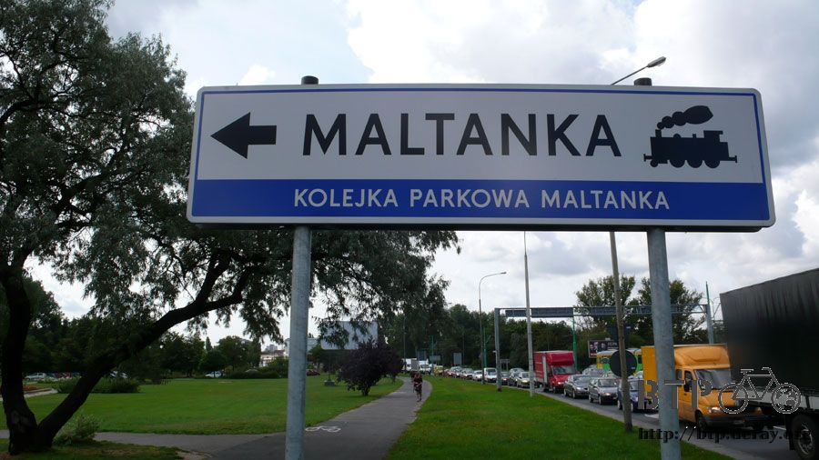
前面那一棟紅色屋頂的就是小火車的售票處，抵達這裡的時候正好聽見火車汽笛的聲音，嗚～嗚～～！
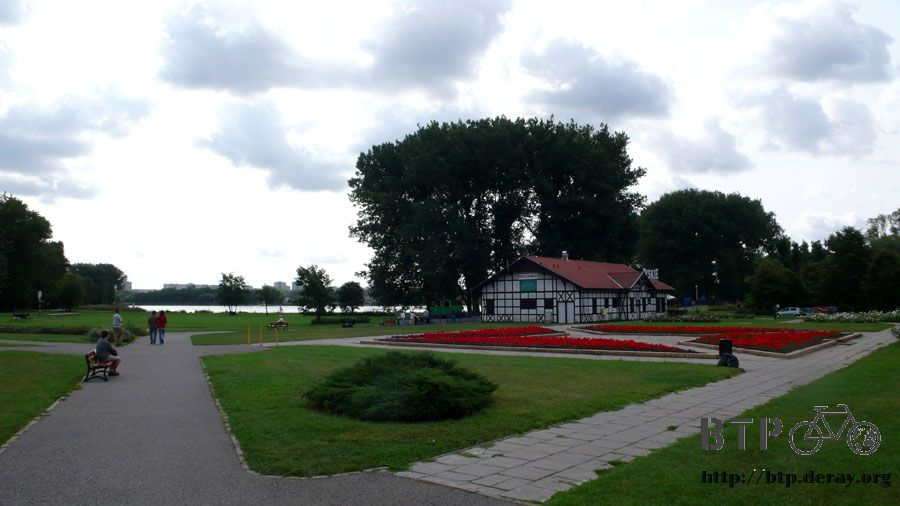
然後看見小火車緩緩的開動，想不到這麼容易就找到小火車的搭乘處，這樣就算成功一半了，接下來只要可以買到票就大功告成。
走到售票處的時候有點傻眼，今天是非假日，火車一個小時只有一班，現在是十一點四分，下一班要十二點才會發車。
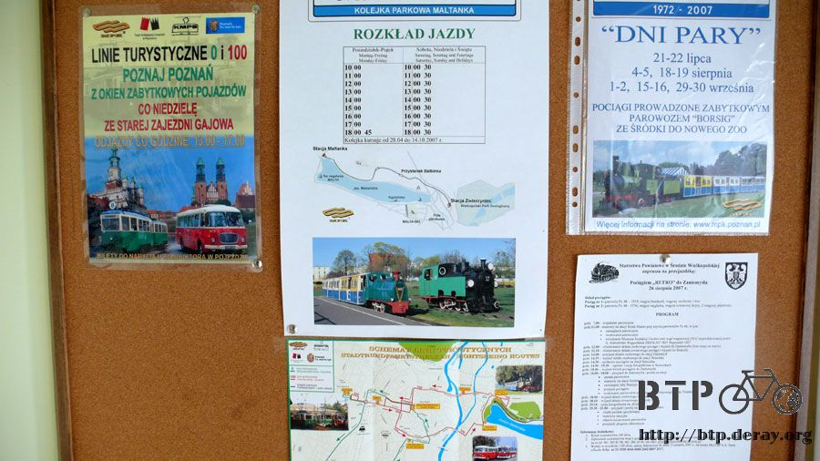
剛才看見小火車開動的時候應該要加速跑過來叫它等一下，結果我還在那邊傻笑的說『我找到了～！』
賣票的老伯伯說十二點才開車，現在還不能賣票，但是先給我一本小火車的指南。
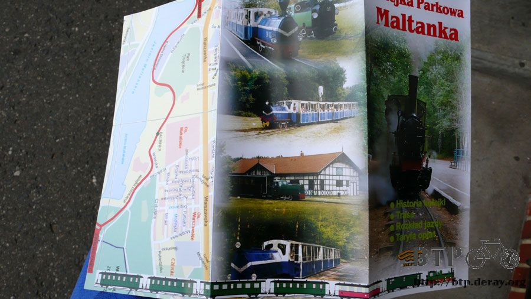
小火車的路線全長三點五五公里，只有兩個站，一個就是湖邊，另外一個就是動物園，好像也有三十年左右的歷史。
看著簡介更想要搭車，下一班車是從動物園往回開，得打發掉這一個小時才行。
還好這是一件很簡單的事情，因為這邊就是如此漂亮的湖區，短短一個小時還不夠逛呢。
這個湖很大，是自然的景觀湖，旁邊挖了一條水渠將水引導到另外一個人工湖，就是上次吃印度料理看到的那一個。
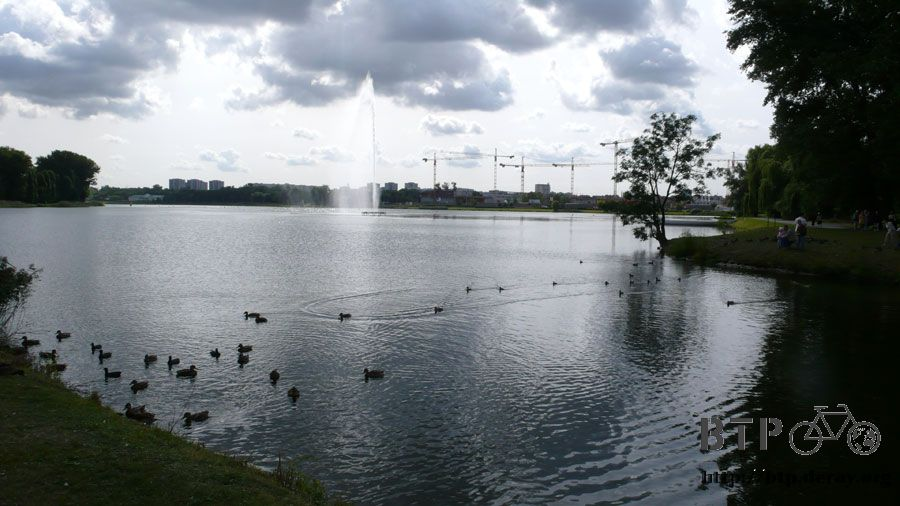
湖面上有一個超高的噴泉，今天雲層很多，幸好沒下雨，整天都很涼爽，走路走很久也不會流汗。
湖邊有一整群的野鴨，左右往返的游來游去，看哪邊餵的東西比較好吃就去哪邊。
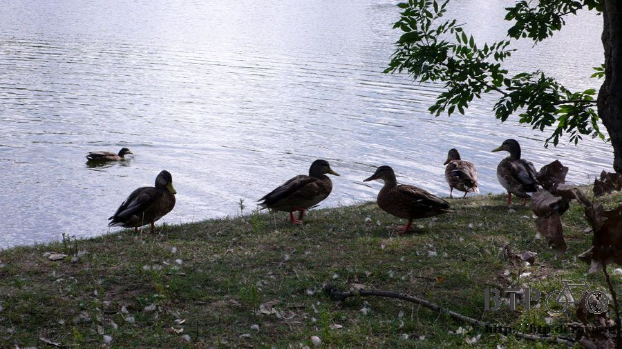
就是牠們，看起來很像昨天吃過的蘋果鴨，膽子很小，一靠近馬上翅膀拍著就跳回湖裡，湖邊的草地上滿地都是羽毛。
在公園的時候可以餵鴿子，在湖邊則可以餵鴨子，膽子再小為了要吃東西還是拼命的向人類靠近。
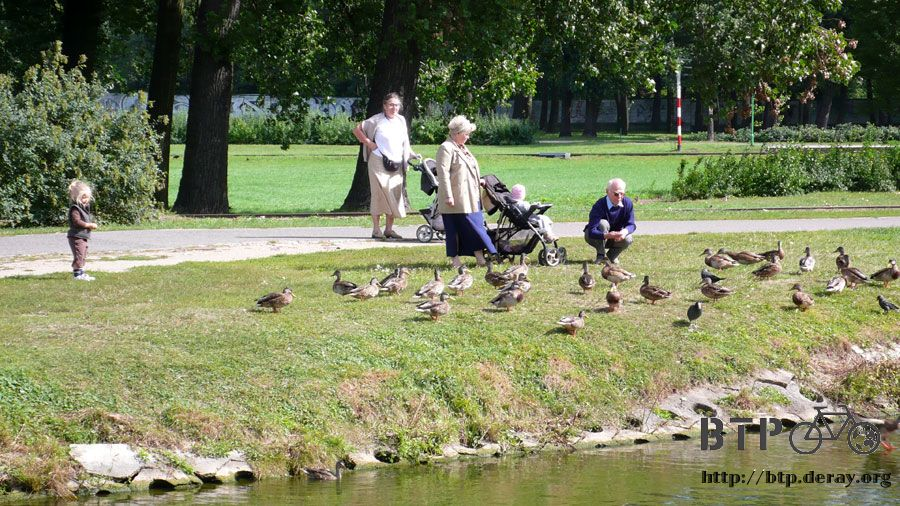
鴨子吃的東西跟鴿子沒兩樣，就拿一大條麵包撕成麵包屑，這樣就能餵上大半天。
這一邊餵的是米果，很快的又把鴨群從老爺爺那邊吸引過來。
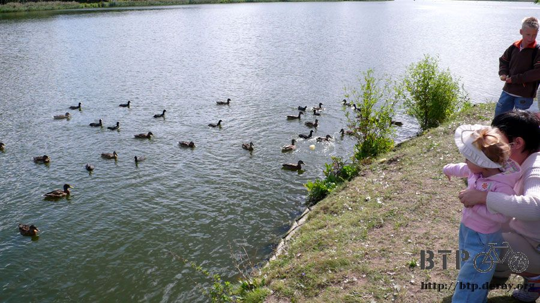
鴨子還蠻笨的，隨便拿一些樹葉、果實丟到水面上，鴨子都會游過來啄一下看能不能吃，發現被騙了還會生氣，呱呱叫地游走。
鴨子數量很多，湖水偏綠色但水質還不錯，可以看見鴨子的腳在水面下很忙的划動著。
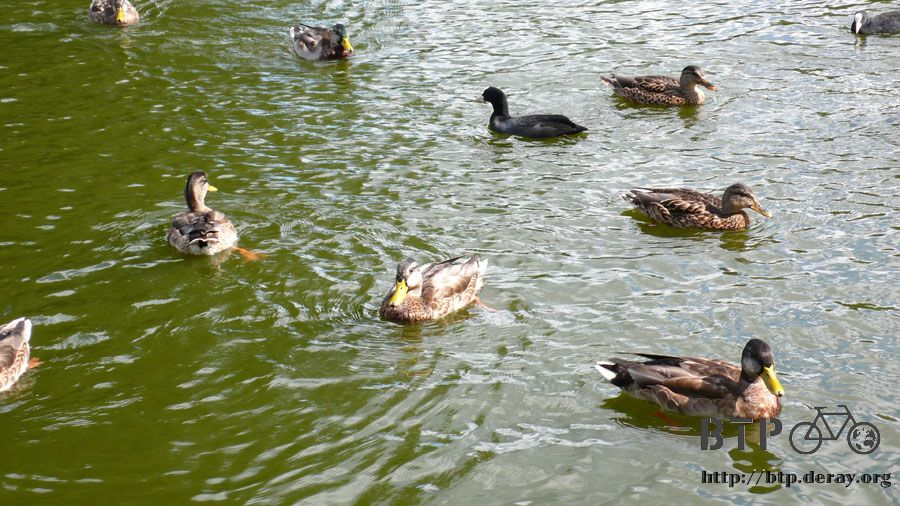
還沒進去動物園，就很有參觀動物園的感覺，還好有帶很多的零食出來吃，不然鴨子看久了會肚子餓。
半天高的噴泉，湖面上有人在划小艇，速度很快的橫跨整座湖，白雲的數量真的好多，默默祈禱不要下午就變成雨天。
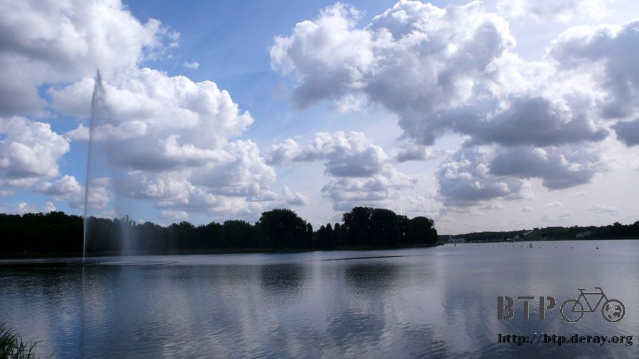
沿著湖岸邊生長的水草有很多種，蘆葦、芒草這些湖邊特有的植物長了很多，唯一沒有的就是浮萍跟布袋蓮這一類，湖面保持得很整潔。
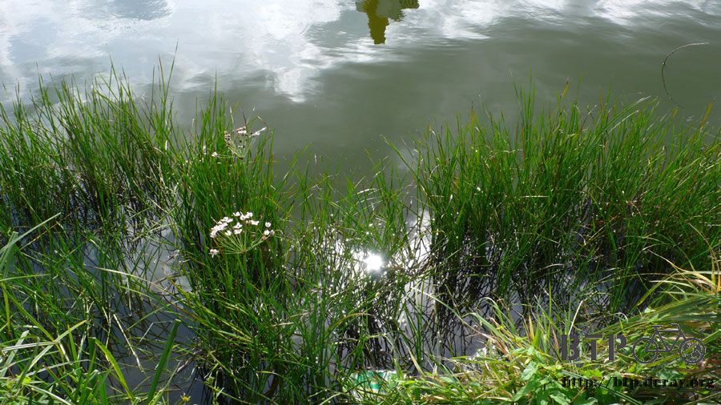
因為這座湖除了很漂亮之外，也是划船比賽的場所，所以要保持湖面乾淨才不會影響比賽進行。
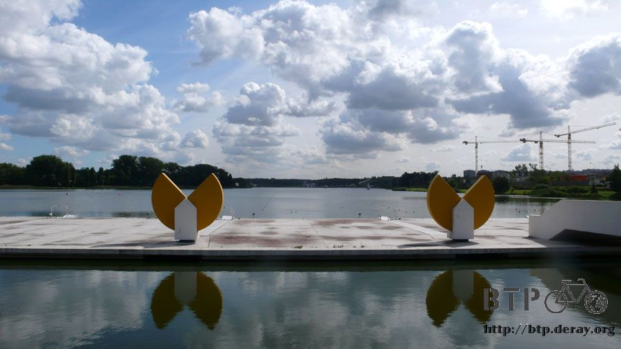
繞湖用腳步行走一圈至少要兩個小時，騎自行車跟滑直排輪就快多了，人車分道，不用怕推嬰兒車的媽媽會跟單車騎士相撞。
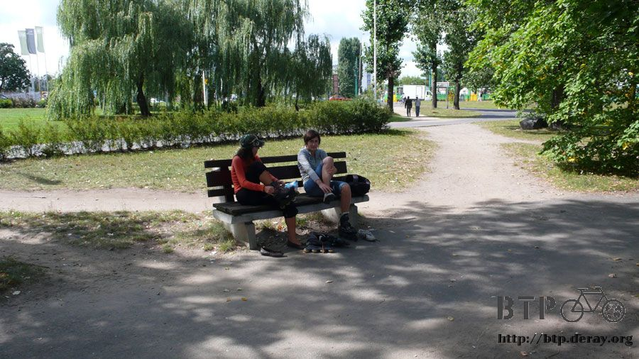
環湖的步道，又長又直的路，這一條是行人用的，旁邊還有一條一模一樣的路則是單車專用。
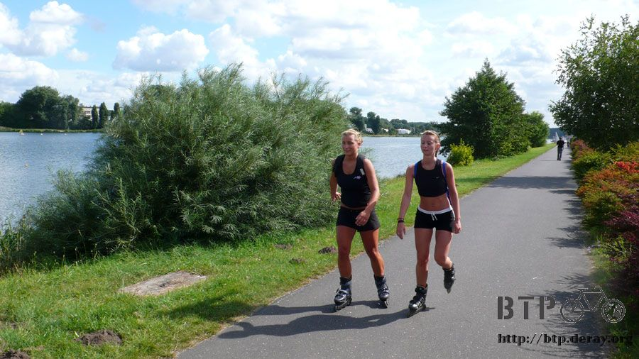
走累的話可以休憩片刻，看著漂亮的大湖，有種想要跳下去游泳的衝動。
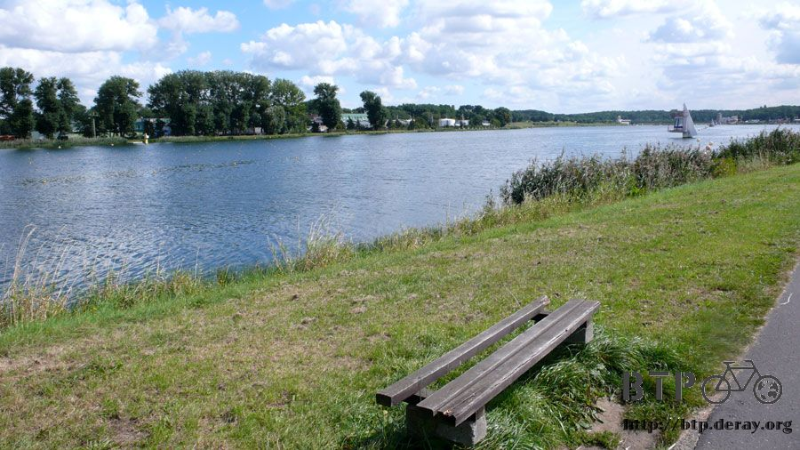
更令我好奇的是居然沒有人在這邊游泳，看見告示牌也畫著禁止游泳的圖案，歐洲管得比較多，如果在莫斯科的話這座湖已經變成露天大泳池了。
沿湖走了一段路，耳朵又聽到汽笛的聲音，小火車從動物園開回來了～趕快跑回售票處去買票，不然又要再等一個小時才有車。
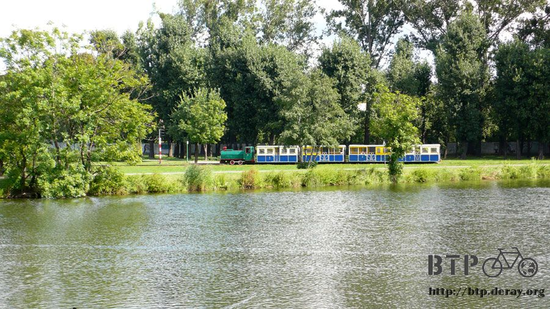
氣喘吁吁的跑回來，現在只剩這一台還有在開，綠色的超級迷你車頭，車廂是藍白相間的顏色，才短短幾分鐘車上就坐滿了人，趕緊去買票。

動物園很適合一家人來玩，遊客大多也都是這樣的組合，一家大小攜家帶眷，或是比較有空的阿公、阿嬤帶孫子出來玩。
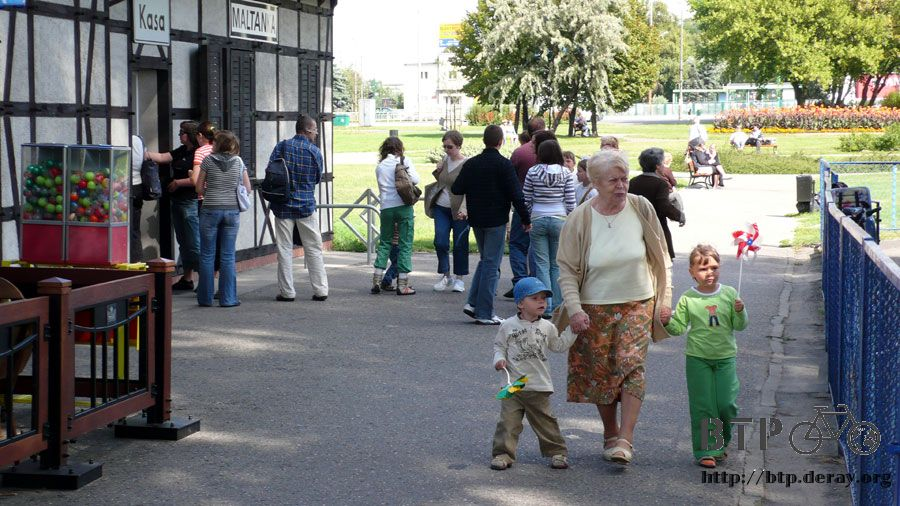
看阿嬤一手牽一個孫子的畫面，就覺得很溫馨～
早上剛到這邊的時候火車已經開走，售票處冷冷清清，現在則重新擠滿了人，跟著排隊買票。
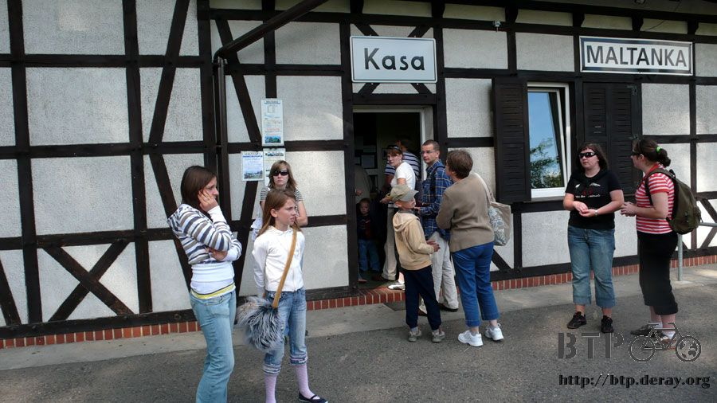
票價不貴，大人是四點五元，單趟車票，買來回票不知道有沒有優待，十六歲以下只要二點五元。
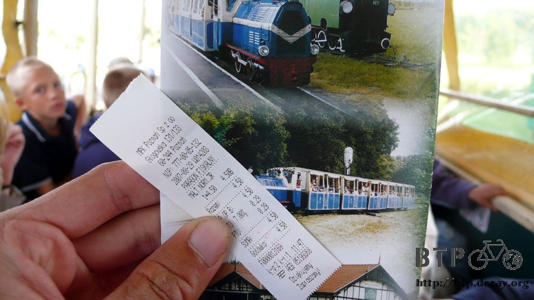
火車票就是一張收據而已，上車前交給站務人員檢查，他會在票的背面印上今天的日期，這樣就算查票完畢啦。
看著小小節的車廂有點傷腦筋，大多都坐滿了，只好找一個有點小的位子跟阿嬤擠一下。
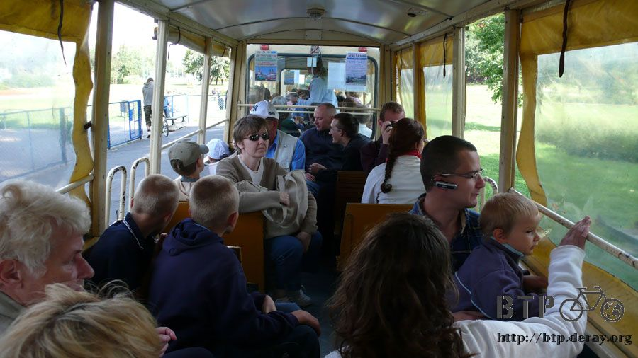
小火車比電車小太多了，椅子非常的迷你，是以小孩為設計出發點，大人的屁股很難坐得住。
好擠的小火車，前面那一節還得用站著的才行，整點的時候汽笛聲響起～往動物園前進。
坐在車廂中看的小火車的簡介，右邊是時刻表，非假日從湖邊是整點發車，動物園則是半點發車，末班車七點。
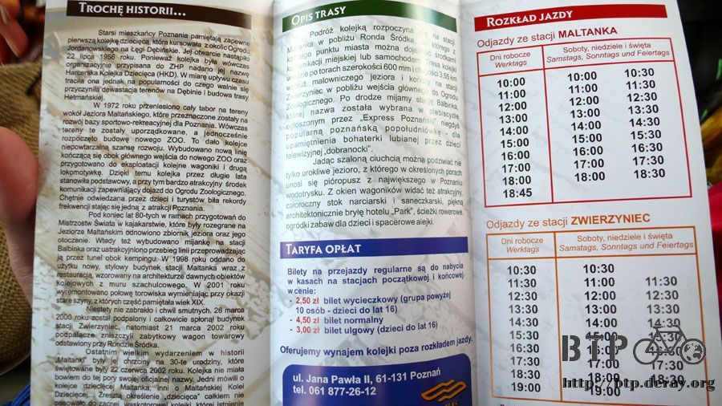
除了搭小火車之外也有很多方法可以去動物園，距離很近，不論用走路、開車或是輕鬆的騎自行車都可以抵達。
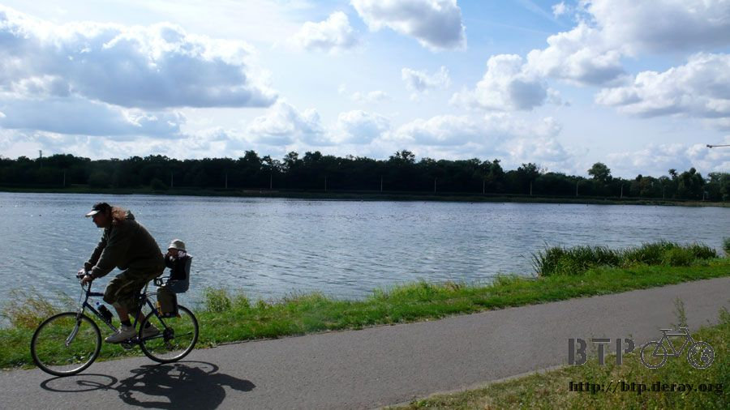
小火車行駛的速度很慢，三點五五公里的距離要開十五分鐘才會到，沿著湖開的時候一直被自行車給超車，最後跟這個載孫女的阿公一起抵達公園。
動物園站到了！準備下車囉～
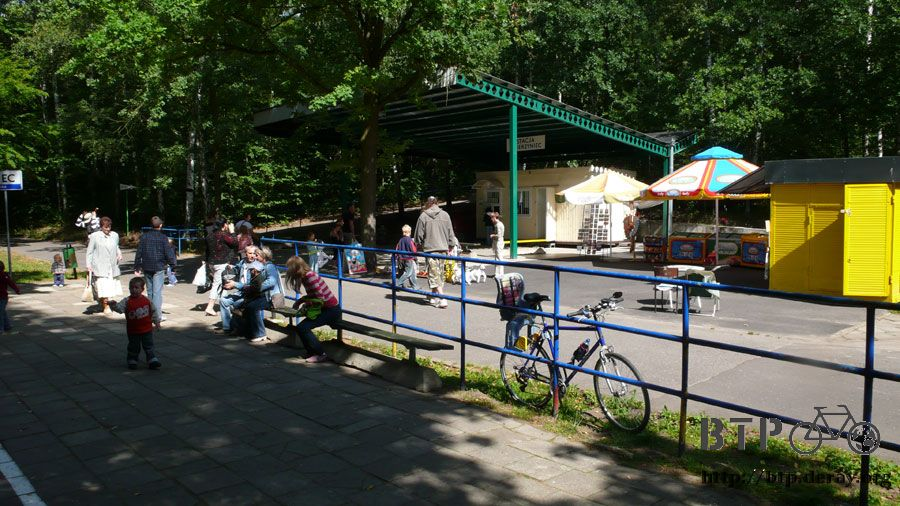
上面照片中的那位阿公，已經將腳踏車停在欄杆處上鎖，車站裡是等著要往回搭的遊客，這邊已經是森林中央，非常迷你的小站。
深綠色衣服的是小火車的駕駛，這列小火車的車頭看起來就像比較大的玩具而已，居然真的可以跑，真是太神奇了。
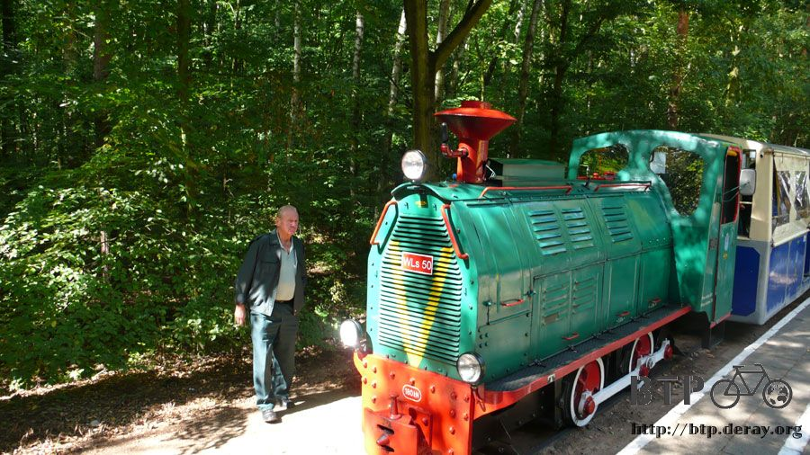
小火車的駕駛座，要拉哪一個開關才會發出汽笛的聲音呢？
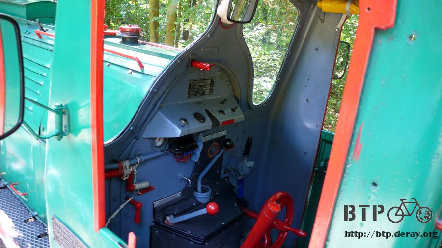
跟著下車的人潮走也行，跟著往動物園的牌子走也可以，『DO ZOO』應該是『往動物園』的意思，走上這一條上坡路就是動物園的入口了。
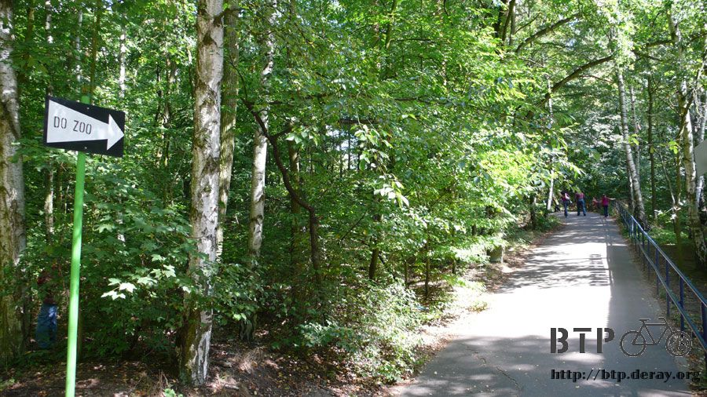
攜家帶眷或是男女朋友牽著手來玩的組合好多喔，連小嬰兒都推出來一起走，接著只要在動物園內看到嬰兒車，裡面都是睡著的小貝比。
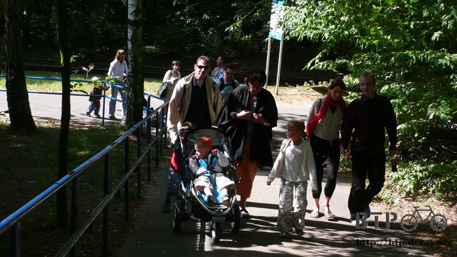
還沒進入動物園就會看見這個小販，全部都是動物的相關玩具，有些看起來真的很可愛。
『在地上打滾，哭著說買給我』是全世界小孩都會用的一招，在這邊又見識到了。
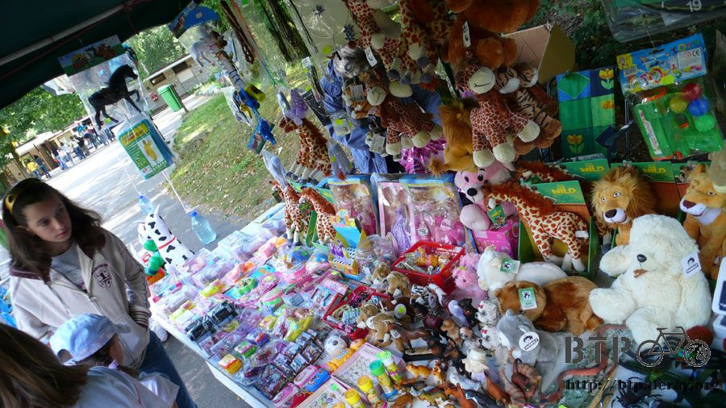
入口處跟售票處設立在一起，所以一爬上斜坡之後就開始排隊，票價大人是九元，小孩半價，嬰兒免費。

印有獅子的就是動物園的門票，票面價格九元，印有大犀牛的手冊，一本要五元。
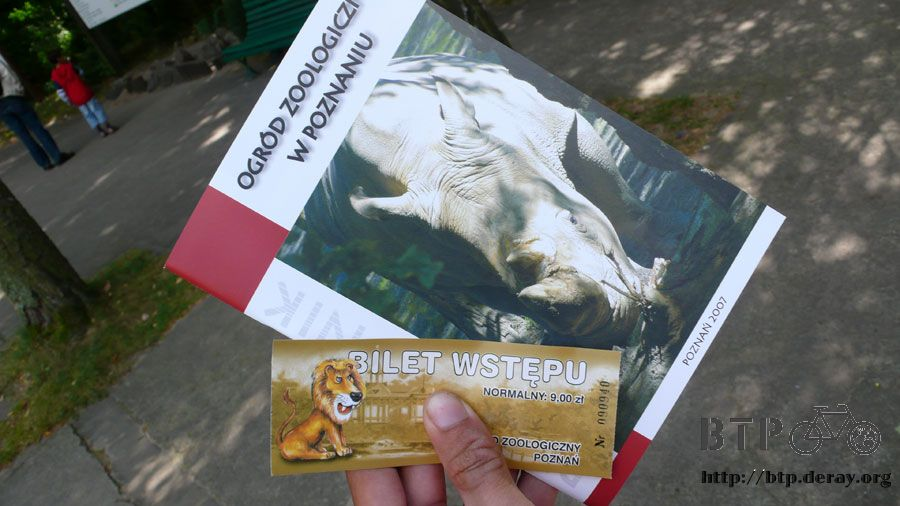
買了之後才發現是波蘭文，還好照片的數量很多，而且拍得都很棒。
這間動物園稍微太大了一點，用走的要走很久，動物活動的區域超級寬廣的，但還是有些動物只有小小的籠子可以棲息，包含最需要飛翔的老鷹在內。
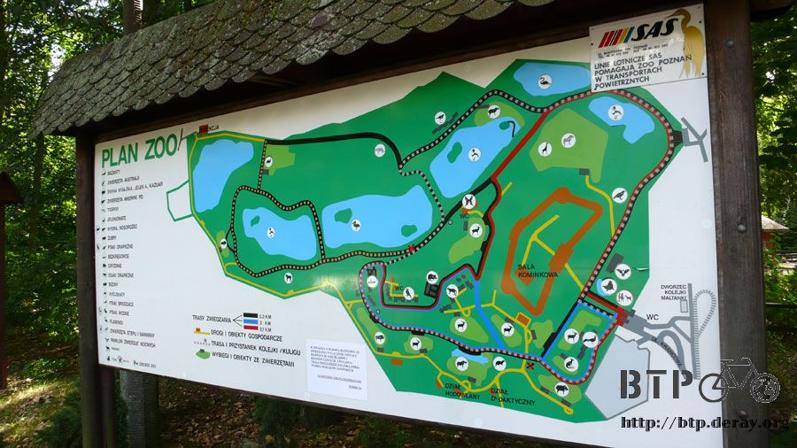
動物園裡有六座大湖泊，鳥禽類自由在湖邊棲息，因為動物園太大了，所以有提供園內小火車方便移動，但是走了一整天沒看到小火車的蹤影。
這邊的動物種類其實並不那樣的齊全，但住在這裡的動物看起來都過得很舒適，希望老鷹也有換新家的一天。
一進到動物園大家都往這裡跑，依照常理推斷這邊應該是可愛動物區，可以讓小孩摸動物的地方。
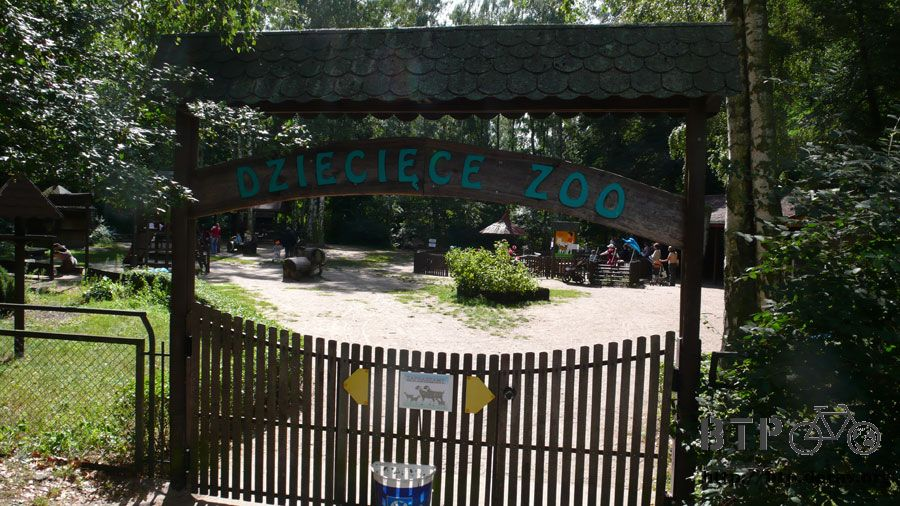
這邊有很多木頭製作的可愛動物，米莎莎如果看到這隻大象，應該會大叫著『我要坐～我要坐～』，然後整天就坐在上面哪也不想去了。
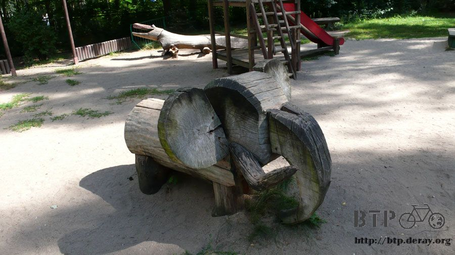
這隻河馬也很可愛
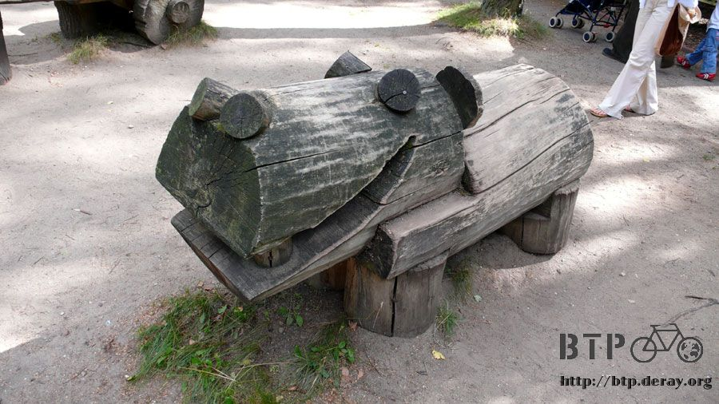
迷你馬的馬車
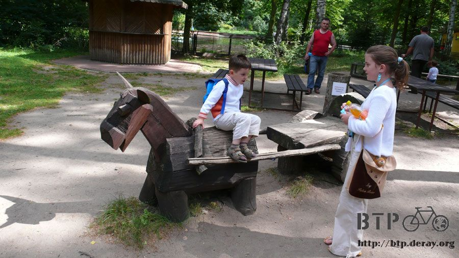
可愛動物區的主打是很多的羊，頭上有長角看起來很像波茲南的城市徽章『兩隻相撞的羊』那一類的品種。
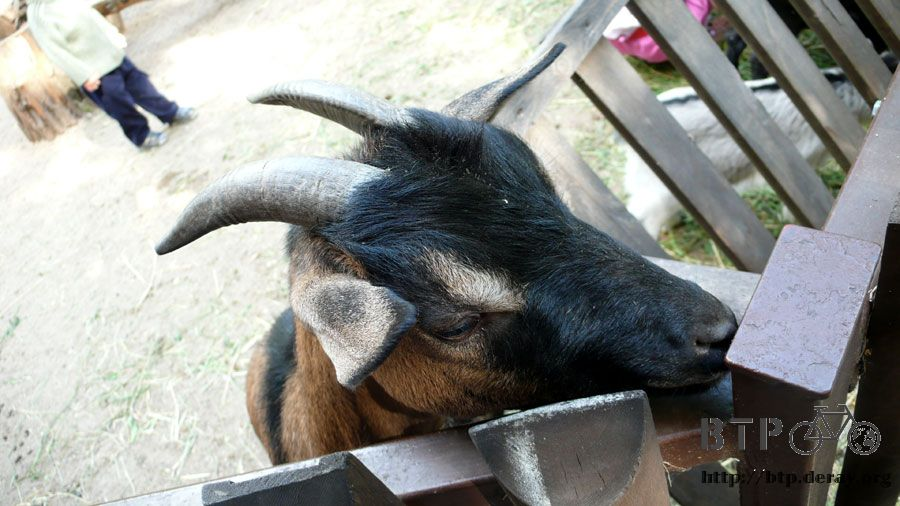
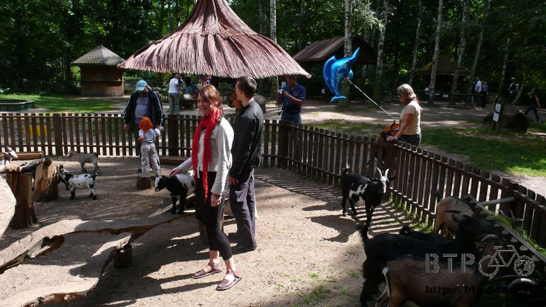
柵欄內都是剛出生不久的小羔羊，或是大腹便便的羊媽媽。
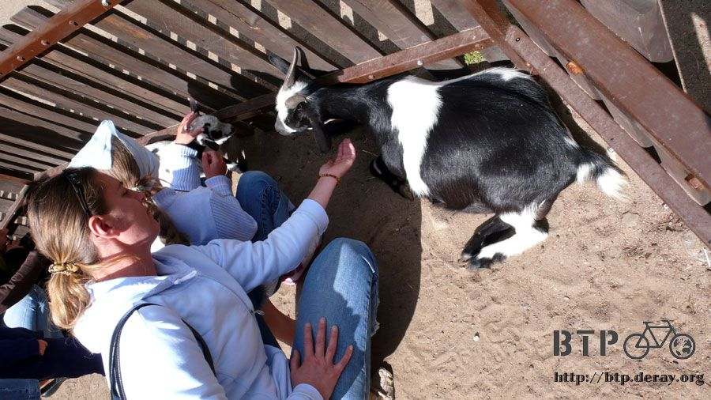
原來小羔羊這麼可愛，以後去吃火鍋的時候就不點小羔羊肉來吃了，給牠們一點長大的機會。
小孩配小羊，這一區看久了會笑到肚子很痛，手上拿草的小孩就是要餵給羊吃，等羊靠過來的時候，小孩又驚嚇得連連後退，然後羊就追上來想吃草。
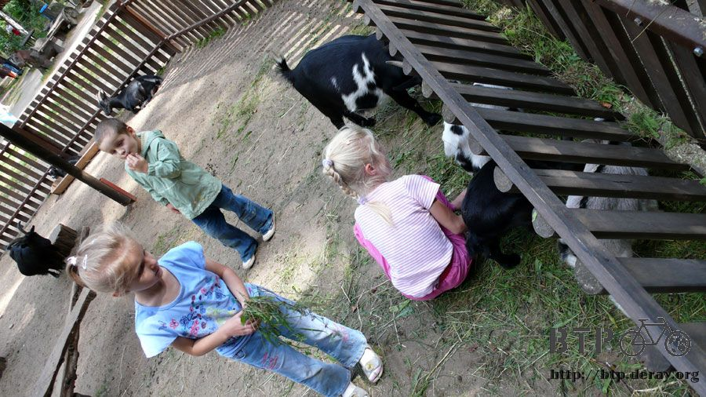
接下來就會看見小羊追著小孩跑，小孩則一臉驚慌的閃躲，大人也不去救小孩，自己還笑得很開心在外頭猛拍照。
反正不可能被小羊給吃掉，在這邊練習膽量學著怎麼跟動物相處。

欄杆外面掛的動物介紹牌，名稱、產地、圖片，最左上角那個『注意熊貓』的圖案不知有什麼意義。
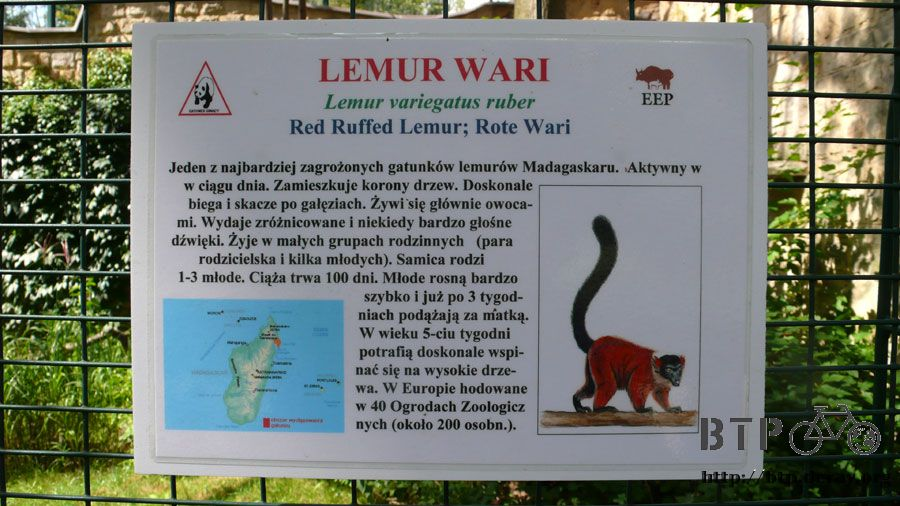
園內的路錯綜複雜，除了大條的路之外，小徑也是遍布整個園區，看到這個牌子就不要誤闖，這是工作人員進入動物生活區域用的路線。
超級大的鳥籠，不禁想起『波斯王子－時之沙』裡在大鳥籠中冒險那一段，園區很大，四面八方都傳來動物的聲音，搞不清楚是從柵欄內還是柵欄外發出來的。
說不定很多動物已經生活在這座動物園的森林之中，這邊規劃的非常綠意盎然，除了簡單的柵欄之外，人走的區域跟動物生長的區域都是一樣的環境。
並沒有特地興建什麼建築物，而是保留這座森林原本的面貌讓動物棲息。
鳥仔腳那麼細，站著就已經很累了，睡覺的時候還要縮一隻起來，這樣不會睡到跌倒嗎？
動物們生活的區域很寬廣，若柵欄外頭不掛個牌子說這裡在養什麼的話，有什麼看半天也看不到動物的影子。
本來我懷疑這個區域是在種樹而已，可是小姐們一直拍照，順著他們的眼光看過去，才發現原來裡頭有長頸鹿，你們住的地方好寬敞呀！
一樣是動物園，這邊看起來感覺就很不一樣，發現動物的時候會有一種興奮的感覺，好像看到野生動物，而不是一個冷冰冰的柵欄內養著無精打采的動物。
六座湖泊中的某一座湖，湖區由鳥禽類自由棲息，冬天想飛去哪裡過冬也沒問題，想回來再回來就好。
天鵝～另外還有一大堆的鴨子、鵜鶘這些大型鳥類
逛動物園感覺好像在健行一樣，呼吸山裡面新鮮的空氣，看動物反而變成其次。
佔地面積一百一十六公頃的動物園，要走很久很久才有辦法全部看完。
整批搭小火車進來的遊客一下子就被廣大的園區給分散掉，還好路上偶爾還會跟一些人擦肩而過，萬一迷路的話，跟著他們走就好了。
不知道是禁止什麼，穿越園區？採摘植物？
這邊用木頭柵欄隔開，裡面有一塊很大的區域養的都是老虎，這個牌子就設在柵欄的周邊，老虎可是兇猛的動物，遊客亂跑亂闖還是會發生危險的。
觀看老虎的地方是一棟小木屋，為了安全起見要爬到二樓才可以往下鳥瞰，在森林中尋找老虎的蹤影。
小木屋裡掛著一張老虎的板子，在各個部位都貼上小紙片跟照片，靠近一點看就會發現寫的都是老虎被濫殺、什麼部位拿去作成什麼藥材。
不好好保育的話，這些美麗的動物很快就要絕種，要到中藥店裡才能看見。
被砍掉的樹從斷根的地方又冒出了新芽，越長越多就變成這樣。
呈現熟睡狀態的小孩，難怪這些小孩都是免費入場，因為他們從頭到尾都在睡覺呀。
沒看到小火車，倒是有看見等小火車的休息站，坐在椅子上休息片刻，涼涼的風吹得我好想睡覺。
小火車的路線圖，好像分為三條路線，可是怎麼都沒看見呀@@"
當我坐在長椅上小瞇片刻的時候就被這個給打到頭，這一區養的是猴子，如果不是樹上掉下來的，就是猴子用果實丟我。
就是他們，臭臉猴子，產地的圖標示的是日本，仔細看圖片會發現懷中還抱著一隻小猴子。
除了比較寬的步道可以走之外，也有很多的小徑能夠穿越林區，這些路是遊園地圖上沒有記載的，發現的時候很有驚喜感。
超漂亮的林蔭大道，跟我所認知的動物園差異很大。
記憶中的動物園就是處處都是遊客，一大堆的柵欄跟許多棟的展覽館，波茲南的動物園所傳達出來的氣氛是截然不同的綠意和寧靜。
這一片綠油油的草地是養小鹿跟大頭鳥的地方，照片最左下角有一個高度很矮的圍籬，不仔細看還不會發現。
我都懷疑這些動物為什麼不會跑出圍籬自由活動，大概是圍籬內的環境已經夠舒適了，跟他們居住的自然環境相當接近，又有食物可以吃，所以沒有逃跑的必要。
比較大隻的鹿養在這邊，介紹牌說這裡養的是梅花鹿，頭上長犄角、身上有白點花紋。
這邊養的鹿數量跟種類都很多，這一隻應該是混著一起養的鹿，餵牠吃一些點心。
就算是波蘭文盲，還是可以在動物園裡看到想看的動物，園區的指示牌設計簡單明瞭，直接用圖案取代文字，一眼就知道往這個方向去會有什麼動物。
底色分紅色跟藍色則是遊園的建議路線，讓你在腳走到斷掉之前可以多看幾種動物，黑色最大圈的沒有兩個小時是走不完的呀~_~
這次只差非洲動物區沒有看，實在太遠了，望著地圖嘆氣，騎自行車都不會累，走路一下子就哇哇叫。
園區內唯一一間的餐廳，賣的東西很簡單，汽水配上漢堡、薯條這些速食，外頭都沒寫標價，大概一直漲價又懶得塗改海報，乾脆就不寫了。
還好出來有帶很多的水跟零食，全部吃光的時候就是要回去睡覺的時候了 :D
搭小火車回湖區再搭六號電車回宿舍，早上的路線倒著進行，今天是動物園遊記，放太多動物的照片感覺會蠻冷的，所以沒有放很多，辣妹照片意思幾張就好。
今天的晚餐由小鵝跟大猩猩聯手烹飪，大男生煮飯的功力可不輸女生，想當初在新竹的時候也都是我掌廚，米莎莎當助手。
宿舍的廚房還蠻方便的，可以煮出來的花樣比泡麵還要高級很多，加上他們自己也是美食主義者，吃的東西不會心酸到哪裡去。
吃了這麼多國家的菜，還是吃台灣人自己煮的菜最有家鄉的風味，一整盤塗上蜂蜜的燒烤肋排、大白菜燉雞胸肉、清甜爽口的長瓜、跟滋補的牛肉湯。

白飯一碗接一碗的添，自己煮比上餐廳吃要來得經濟實惠很多，不僅是吃的時候覺得很開心，烹飪的有趣之處就在於它的過程。
回到台灣之後又可以好好的煮料理，這陣子都只能吃別人煮的，手實在很癢。
不知道自己攜帶的汽化爐除了燒開水煮泡麵之外還能變出什麼花樣來？
明天是星期四，計劃是在波茲南休息的最後一天，唯一特別想去的地方就是看MUCHA的畫展，感受一下藝術氣息，晚上好好的睡一覺，繼續往巴黎前進。
繼續閱讀：8.30 一百年前的MUCHA
波蘭-茲羅提－ 1：12 台幣
8.29 |
總計：18元 |
搭小火車來回湖邊跟動物園9元、動物園門票9元 |
|